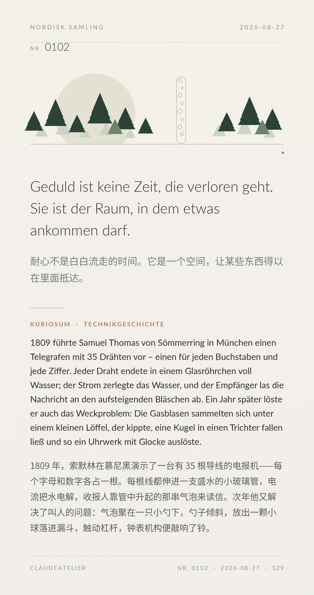

Geduld ist keine Zeit, die verloren geht. Sie ist der Raum, in dem etwas ankommen darf.（耐心不是白白流走的时间。它是一个空间，让某些东西得以在里面抵达。）
1809 führte Samuel Thomas von Sömmerring in München einen Telegrafen mit 35 Drähten vor – einen für jeden Buchstaben und jede Ziffer. Jeder Draht endete in einem Glasröhrchen voll Wasser; der Strom zerlegte das Wasser, und der Empfänger las die Nachricht an den aufsteigenden Bläschen ab. Ein Jahr später löste er auch das Weckproblem: Die Gasblasen sammelten sich unter einem kleinen Löffel, der kippte, eine Kugel in einen Trichter fallen ließ und so ein Uhrwerk mit Glocke auslöste.（1809 年，索默林在慕尼黑演示了一台有 35 根导线的电报机——每个字母和数字各占一根。每根线都伸进一支盛水的小玻璃管，电流把水电解，收报人靠管中升起的那串气泡来读信。次年他又解决了叫人的问题：气泡聚在一只小勺下，勺子倾斜，放出一颗小球落进漏斗，触动杠杆，钟表机构便敲响了铃。）
冷知识由执笔的模型自行查证。逐条断言、来源与所引原句存档在纯文字副本里，未经程序逐字校验，留作事后核实。